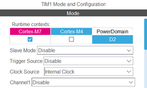
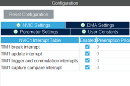
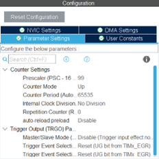
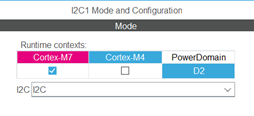
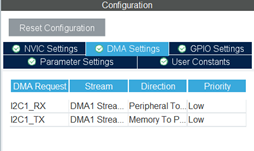
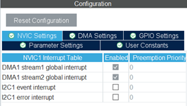
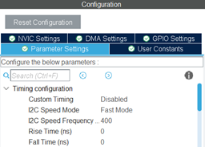
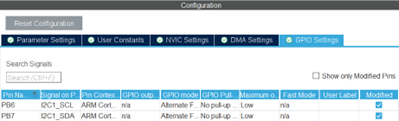
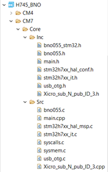
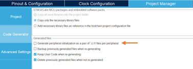

IMU Interface
Connected to NUCLEO-H745ZI-Q
Use all 4 pins; Vin(3.3V), GND(Ground), SDA(I2C), SCL(I2C) directly connected to the board according to the PIN specified in STM32CubeIDE
Prepare before STM32CubeIDE
Before starting to work in STM32CubeIDE, we need to prepare a library for using BNO055 and sending values to ROS2 with the following step:
Download or Clone the files bno055.c, bno055.h, and bno055_stm32.h from https://github.com/ivyknob/bno055_stm32
BNO055 with STM32CubeIDE
We will use STM32CubeIDE to use BNO055 and send values on ROS2 by following steps.
Create an STM32CubeIDE Project with board selected as NUCLEO-H745ZI-Q and set the file to C
TIM1 and I2C1 pins are enabled with the following settings.
       Generate code from IOC
Place the bno055.c file in the Src folder, bno055.h, bno055_stm32.h in Inc folder
Within main.c can be written and within file bno055_stm32.h delete the line #include “i2c.h” (will not delete if STM32 Project Generate Peripheral file comes out or we check the option as below picture in .ioc file)
Build and Upload to board
Continue in ROS2 Interface
Implemention (Core M7)
// BNO055 Read Raw IMU Data
bno055_vector_t v = bno055_getVectorQuaternion();
qw = v.w;
qx = v.x;
qy = v.y;
qz = v.z;
v = bno055_getVectorLinearAccel();
ax = v.x;
ay = v.y;
az = v.z;
v = bno055_getVectorGyroscope();
gx = v.x;
gy = v.y;
gz = v.z;
Runtime Test
IMU Initialization
runstarttime = micros();
//***********************************************
bno055_assignI2C(&hi2c1);
bno055_setup();
bno055_setOperationModeNDOF();
//***********************************************
runtime = micros() - runstarttime;
Runtime: 739.833 - 741.696 ms
IMU Read Raw Data
runstarttime = micros();
//***********************************************
bno055_vector_t v = bno055_getVectorQuaternion();
qw = v.w;
qx = v.x;
qy = v.y;
qz = v.z;
v = bno055_getVectorLinearAccel();
ax = v.x;
ay = v.y;
az = v.z;
v = bno055_getVectorGyroscope();
gx = v.x;
gy = v.y;
gz = v.z;
//***********************************************
runtime = micros() - runstarttime;
Runtime: 3.980 - 7.463 ms